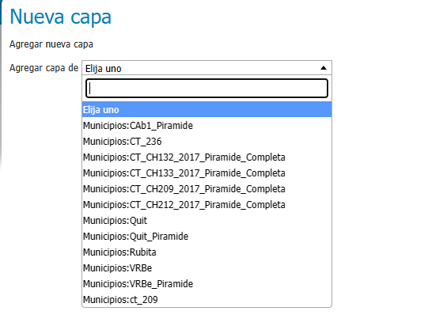

Capacitación: Mapa Web interactivo con Leaflet-GeoServer (WEB-GIS)
Introducción
Es un Sistema de Información Geográfica, es una herramienta tecnológica para la gestión, análisis y visualización de datos espaciales y geográficos. Permite integrar y relacionar diversos tipos de información y realizar análisis espaciales para facilitar la toma de decisiones.
Es una biblioteca de JavaScript de código abierto para crear mapas interactivos en línea que son ligeros y fáciles de usar.
Es un servidor de software libre que permite a los usuarios compartir y editar datos geoespaciales. Diseñado para interoperabilidad, publica datos desde cualquier fuente de datos espaciales utilizando estándares abiertos.
Que aprenderemos
En esta capacitación, aprenderemos a construir un mapa web interactivo utilizando dos herramientas poderosas: Leaflet y GeoServer. El objetivo es crear un sistema de información geográfica (SIG) basado en la web que permita visualizar y analizar datos geoespaciales de manera efectiva.
Requisitos previos
Antes de comenzar, asegúrate de tener lo siguiente:
- Conocimientos básicos de HTML, CSS y JavaScript.
- GeoServer instalado y configurado en tu servidor (puede ser local o remoto).
- Datos geoespaciales (por ejemplo, archivos shapefile, GeoJSON, etc.) que deseas mostrar en el mapa.
Pasos para crear el mapa web interactivo
Configuración de GeoServer
- Accede a la interfaz web de GeoServer (generalmente en http://localhost:8080/geoserver).
- Crea un nuevo almacén de datos (data store) para tus datos geoespaciales.
- Pública las capas que deseas mostrar en el mapa.
Creación del mapa con Leaflet
- Crea una estructura básica de HTML con un contenedor para el mapa.
- Agrega la librería Leaflet a tu proyecto (puedes usar un CDN o descargarla localmente).
- Inicializa el mapa en tu archivo JavaScript
Archivo: index.html
<!DOCTYPE html>
<html lang="es">
<head>
<meta charset="UTF-8">
<meta name="viewport" content="width=device-width, initial-scale=1.0">
<title>Visor WEB-GIS</title>
<link rel="stylesheet" href="https://unpkg.com/leaflet@1.9.4/dist/leaflet.css" integrity="sha256-p4NxAoJBhIIN+hmNHrzRCf9tD/miZyoHS5obTRR9BMY=" crossorigin="" />
<script src="https://unpkg.com/leaflet@1.9.4/dist/leaflet.js" integrity="sha256-20nQCchB9co0qIjJZRGuk2/Z9VM+kNiyxNV1lvTlZBo=" crossorigin=""<</script>
<style>
#map { height: 100vh }
</style>
</head>
<body>
<div id="map"></div>
<script src="./visor.js"></script>
</body>
</html>
// Archivo: visor.js
// Importa Leaflet
import L from 'leaflet';
// Crea un mapa y establece la vista inicial (Quitilipi, Chaco)
const map = L.map('map').setView([-26.8704226,-60.2138326], 14);
// Agrega una capa base (por ejemplo, OpenStreetMap)
L.tileLayer('https://{s}.tile.openstreetmap.org/{z}/{x}/{y}.png', {
attribution: '© OpenStreetMap contributors'
}).addTo(map);
Preview
Geoserver Publicación de Capas
Preparación:
- Asegúrate de tener GeoServer instalado y funcionando correctamente en tu servidor o máquina local.
- Localiza el archivo Shapefile que deseas cargar. Puede estar en tu sistema local o en una ubicación remota.
Publicar nuestras capas en GeoServer:
- Abre tu navegador web y accede a la interfaz web de GeoServer. Por lo general, está disponible en http://localhost:8080/geoserver.
- Inicia sesión con tus credenciales de administrador. User: Admin, pass: geoserver
- Crear un Espacio de Trabajo
- Crear un Almacén de Datos
- Elige el tipo de almacén de datos (por ejemplo, “Shapefile”)
- Configura la conexión al archivo Shapefile especificando la ruta local o la URL remota
- Publicar una capa
- Define el nombre de la capa y asígnala al espacio de trabajo que creaste previamente

- Publicar la Capa
- Cargamos información de la capa
- Ve a la pestaña “Capas” y verifica que tu capa esté disponible.
- Probamos la capa recientemente publicada
Ver la capa publicada en el Visor WEB-GIS
Servicio WMS de Geoserver (devuelve una imagen .png)
Modicamos nuestro archivo: visor.js
var wmsLayer = L.tileLayer.wms("http://localhost:8080/geoserver/wms", {
layers: 'Quit_parcelario',
format: 'image/png',
transparent: true,
opacity: 0.5,
});
map.addLayer(wmsLayer);
Preview
Servicio WFS de Geoserver (Devuelve un json)
Modicamos nuestro archivo: visor.js
var wfsUrl = 'http://localhost:8080/geoserver/wfs';
var parameters = {
service: 'WFS', version: '1.0.0', request: 'GetFeature',
typeName: 'Municipios:Quit_parcelario',
srsNAME: 'urn:ogc:def:crs:OGC:1.3:CRS84',
outputFormat: 'application/json'
};
// Realiza la petición fetch
fetch(wfsUrl + L.Util.getParamString(parameters))
.then(function(response) { return response.json();})
.then(function(json) {
L.geoJson(json, {
style: {color: 'blue',
}
}).addTo(map);
})
.catch(function(error) { console.error('Error al realizar la petición WFS:', error); });
Preview